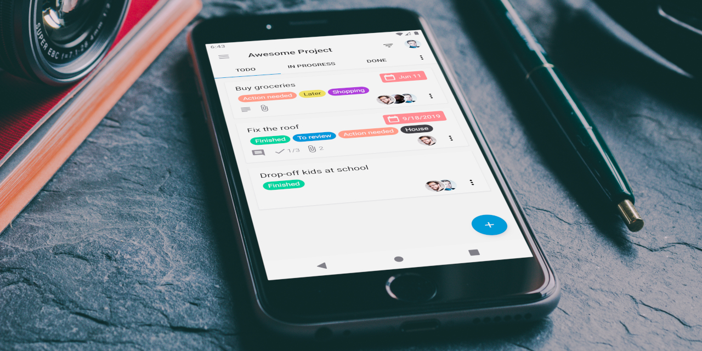
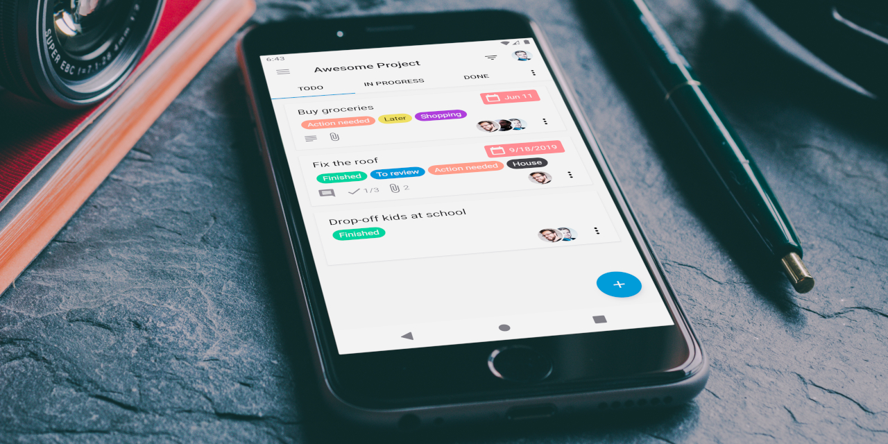

This app attempts to provide an easy guide to analyze why
your card does not appear in the upcoming cards view of the Nextcloud Deck app.
help
Describe your card
With this details we can tell you why your card is not shown
{{context.cardIsVisible ?
'visibility' : 'visibility_off'}}
{{context.cardIsVisible ? 'Card is visible' : 'Card is not visible'}}
{{context.cardIsVisible ? 'Congratulations!' : 'Check out the hints below'}}
{{hint$ | async}}
Report bug
info
Rules
Learn in which cases a card appears in the upcoming view
Starting with Deck 1.5 cards will appear in the upcoming view if one of the following two cases matches:
- Card has a due date and card is in a not shared board
- Card is in a board which is also shared with others and one of the following two cases
matches:
- card is assigned to you or
- card has a due date
and
nobody is assigned to the card
The Deck Android app currently display cards which match this pattern from
all accounts.
 Nextcloud Deck
Android app

Did you know? There is an open source Android client for the Nextcloud Deck app, available at the Google Play
Store.
Download
Nextcloud Deck
Android app

Did you know? There is an open source Android client for the Nextcloud Deck app, available at the Google Play
Store.
Download